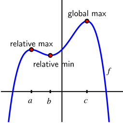
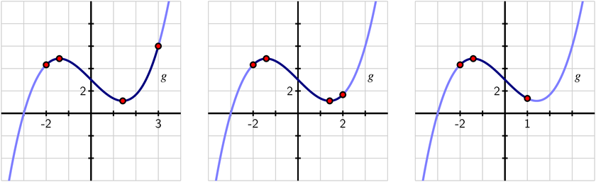
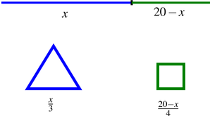
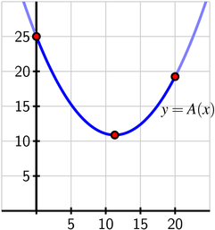
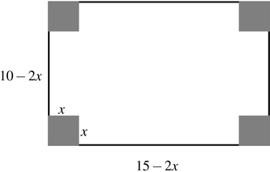

{In this section, we strive to understand the ideas generated by the following important questions:
What are the differences between finding relative extreme values and global extreme values of a function?
How is the process of finding the global maximum or minimum of a function over the function's entire domain different from determining the global maximum or minimum on a restricted domain?
For a function that is guaranteed to have both a global maximum and global minimum on a closed, bounded interval, what are the possible points at which these extreme values occur?
}
Subsection3.3.1Introduction
We have seen that we can use the first derivative of a function to determine where the function is increasing or decreasing, and the second derivative to know where the function is concave up or concave down. Each of these approaches provides us with key information that helps us determine the overall shape and behavior of the graph, as well as whether the function has a relative minimum or relative maximum at a given critical number. Remember that the difference between a relative maximum and a global maximum is that there is a relative minimum of \(f\) at \(x = p\) if \(f(p) \ge f(x)\) for all \(x\) near \(p\), while there is a global maximum at \(p\) if \(f(p) \ge f(x)\) for all \(x\) in the domain of \(f\).
Figure3.3.1A function \(f\) with a global maximum, but no global minimum.
For instance, in Figure 3.3.1, we see a function \(f\) that has a global maximum at \(x = c\) and a relative maximum at \(x = a\), since \(f(c)\) is greater than \(f(x)\) for every value of \(x\), while \(f(a)\) is only greater than the value of \(f(x)\) for \(x\) near \(a\). Since the function appears to decrease without bound, \(f\) has no global minimum, though clearly \(f\) has a relative minimum at \(x = b\).
Our emphasis in this section is on finding the global extreme values of a function (if they exist). In so doing, we will either be interested in the behavior of the function over its entire domain or on some restricted portion. The former situation is familiar and similar to work that we did in the two preceding sections of the text. We explore this through a particular example in the following preview activity.
Preview Activity
Let \(\ds f(x) = 2 + \frac{3}{1+(x+1)^2}\).
Determine all of the critical values of \(f\).
Construct a first derivative sign chart for \(f\) and thus determine all intervals on which \(f\) is increasing or decreasing.
Does \(f\) have a global maximum? If so, why, and what is its value and where is the maximum attained? If not, explain why.
Explain why \(f(x) > 2\) for every value of \(x\).
Does \(f\) have a global minimum? If so, why, and what is its value and where is the minimum attained? If not, explain why.
Subsection3.3.2Global Optimization
For the functions in Figure 3.3.1 and Preview Activity , we were interested in finding the global minimum and global maximum on the entire domain, which turned out to be \((-\infty, \infty)\) for each. At other times, our perspective on a function might be more focused due to some restriction on its domain. For example, rather than considering \(f(x) = 2 + \frac{3}{1+(x+1)^2}\) for every value of \(x\), perhaps instead we are only interested in those \(x\) for which \(0 \le x \le 4\), and we would like to know which values of \(x\) in the interval \([0,4]\) produce the largest possible and smallest possible values of \(f\). We are accustomed to critical numbers playing a key role in determining the location of extreme values of a function; now, by restricting the domain to an interval, it makes sense that the endpoints of the interval will also be important to consider, as we see in the following activity. When limiting ourselves to a particular interval, we will often refer to the absolute maximum or minimum value, rather than the global maximum or minimum.
Since \(g'(x) = x^2 - 2\), the critical numbers of \(g\) are \(x = \pm \sqrt{2} \approx \pm 1.414\), both of which lie in the interval \(-2 \le x \le 3\).
The figure shown below shows three related plots, each with the emphases on the interval provided in (c), (d), and (e).

On \([-2,3]\), \(g\) has a global maximum at \(x = 3\) and a global minimum at \(x = \sqrt{2}\).
On \([-2,2]\), \(g\) has a global maximum at \(x = -\sqrt{2}\) and a global minimum at \(x = \sqrt{2}\).
On \([-2,3]\), \(g\) has a global maximum at \(x = -\sqrt{2}\) and a global minimum at \(x = 1\).
In Activity 3.3.2, we saw how the absolute maximum and absolute minimum of a function on a closed, bounded interval \([a,b]\), depend not only on the critical numbers of the function, but also on the selected values of \(a\) and \(b\). These observations demonstrate several important facts that hold much more generally. First, we state an important result called the Extreme Value Theorem.
{
The Extreme Value Theorem: \knownindex{\lt main>extreme value theorem\lt /main>}
If \(f\) is a continuous function on a closed interval \([a,b]\), then \(f\) attains both an absolute minimum and absolute maximum on \([a,b]\). That is, for some value \(x_m\) such that \(a \le x_m \le b\), it follows that \(f(x_m) \le f(x)\) for all \(x\) in \([a,b]\). Similarly, there is a value \(x_M\) in \([a,b]\) such that \(f(x_M) \ge f(x)\) for all \(x\) in \([a,b]\). Letting \(m = f(x_m)\) and \(M = f(x_M)\), it follows that \(m \le f(x) \le M\) for all \(x\) in \([a,b]\).
}
The Extreme Value Theorem tells us that provided a function is continuous, on any closed interval \([a,b]\) the function has to achieve both an absolute minimum and an absolute maximum. Note, however, that this result does not tell us where these extreme values occur, but rather only that they must exist. As seen in the examples of Activity 3.3.2, it is apparent that the only possible locations for relative extremes are either the endpoints of the interval or at a critical number (the latter being where a relative minimum or maximum could occur, which is a potential location for an absolute extreme). Thus, we have the following approach to finding the absolute maximum and minimum of a continuous function \(f\) on the interval \([a,b]\):
find all critical numbers of \(f\) that lie in the interval;
evaluate the function \(f\) at each critical number in the interval and at each endpoint of the interval;
from among the noted function values, the smallest is the absolute minimum of \(f\) on the interval, while the largest is the absolute maximum.
After computing \(h'(x)\), factor to write the derivative as a product. Remember that \(e^{-x} \ne 0\) for all \(x\).
The sine and cosine functions have the same value at \(\frac{\pi}{4} \pm k\pi\) for any integer \(k\). Which of these occur within the given interval?
Upon finding \(q'(x)\), factor its numerator. Observe that even though \(q'(2)\) is not defined, \(2\) is not a critical number because \(q(2)\) is not defined; moreover, \(2\) is not in the interval under consideration.
Remember that \(e^{-(x-2)^2}\) is never zero. Note that the domain being considered is all real numbers.
For \(h(x) = xe^{-x}\), we know that \(h'(x) = xe^{-x}(-1) + e^{-x} = e^{-x}(-x+1)\). Therefore, the only critical value of \(h\) is \(x = 1\). Next, we compute \(h(1)\), \(h(0)\), and \(h(3)\). Observe that
\(h(1) = e^{-1} \approx 0.36788\)
\(h(0) = 0\)
\(h(3) = 3e^{-3} \approx 0.14936\)
Thus, on \([0,3]\), the absolute maximum of \(h\) is \(e^{-1}\) and the absolute minimum is \(0\).
Given \(p(t) = \sin(t) + \cos(t)\), it follows \(p'(t) = \cos(t) - \sin(t)\), so \(p'(t) = 0\) implies that \(\cos(t) =\sin(t)\). The sine and cosine functions have the same value at \(\frac{\pi}{4} \pm k\pi\) for any integer \(k\). The only time this occurs in \([-\frac{\pi}{2}, \frac{\pi}{2}]\) is for \(x = \frac{\pi}{4}\), and thus this is the only critical value of \(p\) in the given interval. Now,
Therefore, on \([-\frac{\pi}{2},\frac{\pi}{2}]\), the absolute maximum of \(p\) is \(\sqrt{2}\) and the absolute minimum is \(-1\).
With \(q(x) = \frac{x^2}{x-2}\), we have
\[
q'(x) = \frac{(x-2)(2x) - x^2(1)}{(x-2)^2} = \frac{2x^2 - 4x - x^2}{(x-2)^2} = \frac{x^2-4x}{(x-2)^2} = \frac{x(x-4)}{(x-2)^2}.
\]
Hence, the critical values of \(q\) are \(x = 0\) and \(x = 4\). Only the latter critical value lies in the interval \([3,7]\), and thus we evaluate \(q\) and find
\(q(4) = \frac{16}{2} = 8\)
\(q(3) = \frac{9}{1} = 9\)
\(q(7) = \frac{49}{5} = 9.8\)
We now see that on \([3,7]\) the absolute maximum of \(q\) is 9.8 and the absolute minimum is 8.
Here, we first observe that we are working on the domain of all real numbers, not a closed bounded interval. Hence, we need to think about the overall behavior of the function. First, since \(f(x) = 4 - e^{-(x-2)^2}\), by the chain rule we see that \(f'(x) = -e^{-(x-2)^2}(-2(x-2)) = 2(x-2)e^{-(x-2)^2}.\) Since \(e^{-(x-2)^2}\) is always positive (in particular, never zero), it follows that the only critical value of \(f\) is \(x = 2\). Furthermore, with \(f'(x) = 2(x-2)e^{-(x-2)^2}\), we see that for \(x \lt 2\), \(f'(x) \lt 0\), while for \(x > 2\), \(f'(x) > 0\). This tells us by the first derivative test that \(f\) is decreasing for \(x \lt 2\) and increasing for \(x > 2\), which tells us that \(f\) has an absolute minimum at \(x = 2\), and \(f\) does not have an absolute maximum.
One of the big lessons in finding absolute extreme values is the realization that the interval we choose has nearly the same impact on the problem as the function under consideration. Consider, for instance, the function pictured in Figure 3.3.4.
Figure3.3.4A function \(g\) considered on three different intervals.
In sequence, from left to right, as we see the interval under consideration change from \([-2,3]\) to \([-2,2]\) to \([-2,1]\), we move from having two critical numbers in the interval with the absolute minimum at one critical number and the absolute maximum at the right endpoint, to still having both critical numbers in the interval but then with the absolute minimum and maximum at the two critical numbers, to finally having just one critical number in the interval with the absolute maximum at one critical number and the absolute minimum at one endpoint. It is particularly essential to always remember to only consider the critical numbers that lie within the interval.
Subsection3.3.3Moving towards applications
In Section 3.4, we will focus almost exclusively on applied optimization problems: problems where we seek to find the absolute maximum or minimum value of a function that represents some physical situation. We conclude this current section with an example of one such problem because it highlights the role that a closed, bounded domain can play in finding absolute extrema. In addition, these problems often involve considerable preliminary work to develop the function which is to be optimized, and this example demonstrates that process.
A 20 cm piece of wire is cut into two pieces. One piece is used to form a square and the other an equilateral triangle. How should the wire be cut to maximize the total area enclosed by the square and triangle? to minimize the area?
Solution.
We begin by constructing a picture that exemplifies the given situation. The primary variable in the problem is where we decide to cut the wire. We thus label that point \(x\), and note that the remaining portion of the wire then has length \(20-x\)
Figure3.3.6A 20 cm piece of wire cut into two pieces, one of which forms an equilateral triangle, the other which yields a square.
As shown in Figure 3.3.6, we see that the \(x\) cm of the wire that are used to form the equilateral triangle result in a triangle with three sides of length \(\frac{x}{3}\). For the remaining \(20-x\) cm of wire, the square that results will have each side of length \(\frac{20-x}{4}\).
At this point, we note that there are obvious restrictions on \(x\): in particular, \(0 \le x \le 20\). In the extreme cases, all of the wire is being used to make just one figure. For instance, if \(x = 0\), then all 20 cm of wire are used to make a square that is \(5 \times 5\).
Now, our overall goal is to find the absolute minimum and absolute maximum areas that can be enclosed. We note that the area of the triangle is \(A_{\triangle} = \frac{1}{2} bh = \frac{1}{2} \cdot \frac{x}{3} \cdot \frac{x\sqrt{3}}{6}\), since the height of an equilateral triangle is \(\sqrt{3}\) times half the length of the base. Further, the area of the square is \(A_{\Box} = s^2 = \left( \frac{20-x}{4} \right)^2\). Therefore, the total area function is
Setting \(A'(x) = 0\), it follows that \(x = \frac{180}{4\sqrt{3}+9} \approx 11.3007\) is the only critical number of \(A\), and we note that this lies within the interval \([0,20]\).
Evaluating \(A\) at the critical number and endpoints, we see that
Thus, the absolute minimum occurs when \(x \approx 11.3007\) and results in the minimum area of approximately \(10.8741\) square centimeters, while the absolute maximum occurs when we invest all of the wire in the square (and none in the triangle), resulting in 25 square centimeters of area. These results are confirmed by a plot of \(y = A(x)\) on the interval \([0,20]\), as shown in Figure 3.3.7.
Figure3.3.7A plot of the area function from Example 3.3.5.\hspace{5.0in}
A piece of cardboard that is \(10 \times 15\) (each measured in inches) is being made into a box without a top. To do so,
squares are cut from each corner of the box and the remaining sides are folded up. If the box needs to be at least 1 inch deep and no more than 3 inches deep, what is the maximum possible volume of the box? what is the minimum volume? Justify your answers using calculus.
Draw a labeled diagram that shows the given information. What variable should we introduce to represent the choice we make in creating the box? Label the diagram appropriately with the variable, and write a sentence to state what the variable represents.
Determine a formula for the function \(V\) (that depends on the variable in (a)) that tells us the volume of the box.
What is the domain of the function \(V\)? That is, what values of \(x\) make sense for input? Are there additional restrictions provided in the problem?
Determine all critical values of the function \(V\).
Evaluate \(V\) at each of the endpoints of the domain and at any critical values that lie in the domain.
What is the maximum possible volume of the box? the minimum?
Consider letting the length of one side of the removed squares be represented by \(x\). Note, then, that one side of the box will have length \(10 - 2x\).
Remember that the volume of a box is length \(\times\) width \(\times\) height. Write each of length, width, and height in terms of \(x\).
Read the given information carefully and think about the picture.
Note that since \(V\) is a cubic function, \(V'\) is quadratic, so you can find the critical values exactly.
Which critical values satisfy \(1 \le x \le 3\)?
Evaluate the function at appropriate points and see which is greatest and which is least.
We let \(x\) represent the length of a side of the square that is cut from each corner, so that we have the following picture:

Because the box has dimensions \((10-2x) \times (15-2x) \times x\), the volume of the box is given by
\[
V(x) = x (10-2x) (15-2x) = 4x^3 - 50x^2 + 150x.
\]
Clearly the smallest \(x\) can be is 0 and the largest \(x\) can be is 5, since one side of the cardboard has length 10. But we're told in the problem to restrict the value of \(x\) to \(1 \le x \le 3\), so this is the domain we use for \(V\), even though \(V\) is defined for every real number \(x\).
Since \(V'(x) = 12x^2 - 100x + 150\), it follows that the critical values (where \(V'(x) = 0\)) are
\[
x = \frac{25 \pm 5\sqrt{7}}{6} \approx 6.371459426, 1.961873908.
\]
Only the latter critical number is in the relevant domain of \(V\), and hence we consider
\(V(1.961873908) = 132.0382370\)
\(V(1) = 104\)
\(V(3) = 108\)
Hence the absolute maximum possible volume of the box is 132.0382370 and occurs when \(x = 1.961873908\), while the absolute minimum is 104, which occurs when \(x=1\).
The approaches shown in Example 3.3.5 and experienced in Activity 3.3.8 include standard steps that we undertake in almost every applied optimization problem: we draw a picture to demonstrate the situation, introduce one or more variables to represent quantities that are changing, work to find a function that models the quantity to be optimized, and then decide an appropriate domain for that function. Once that work is done, we are in the familiar situation of finding the absolute minimum and maximum of a function over a particular domain, at which time we apply the calculus ideas that we have been studying to this point in Chapter 3.
\item To find relative extreme values of a function, we normally use a first derivative sign chart and classify all of the function's critical numbers. If instead we are interested in absolute extreme values, we first decide whether we are considering the entire domain of the function or a particular interval.
\item In the case of finding global extremes over the function's entire domain, we again use a first or second derivative sign chart in an effort to make overall conclusions about whether or not the function can have a absolute maximum or minimum.
If we are working to find absolute extremes on a restricted interval, then we first identify all critical numbers of the function that lie in the interval.
\item For a continuous function on a closed, bounded interval, the only possible points at which absolute extreme values occur are the critical numbers and the endpoints. Thus, to find said absolute extremes, we simply evaluate the function at each endpoint and each critical number in the interval, and then we compare the results to decide which is largest (the absolute maximum) and which is smallest (the absolute minimum).
\hrulefill
\begin{exercises}
\item Based on the given information about each function, decide whether the function has global maximum, a global minimum, neither, both, or that it is not possible to say without more information. Assume that each function is twice differentiable and defined for all real numbers, unless noted otherwise. In each case, write one sentence to explain your conclusion.
\(f\) is a function such that \(f''(x) \lt 0\) for every \(x\).
\(g\) is a function with two critical values \(a\) and \(b\) (where \(a \lt b\)), and \(g'(x) \lt 0\) for \(x \lt a\), \(g'(x) \lt 0\) for \(a \lt x \lt b\), and \(g'(x) > 0\) for \(x > b\).
\(h\) is a function with two critical values \(a\) and \(b\) (where \(a \lt b\)), and \(h'(x) \lt 0\) for \(x \lt a\), \(h'(x) > 0\) for \(a \lt x \lt b\), and \(h'(x) \lt 0\) for \(x > b\). In addition, \(\lim_{x \to \infty} h(x) = 0\) and \(\lim_{x \to -\infty} h(x) = 0\).
\(p\) is a function differentiable everywhere except at \(x = a\) and \(p''(x) > 0\) for \(x \lt a\) and \(p''(x) \lt 0\) for \(x > a\).
\item For each family of functions that depends on one or more parameters, determine the function's absolute maximum and absolute minimum on the given interval.
\item For each of the functions described below (each continuous on \([a,b]\)), state the location of the function's absolute maximum and absolute minimum on the interval \([a,b]\), or say there is not enough information provided to make a conclusion. Assume that any critical values mentioned in the problem statement represent all of the critical numbers the function has in \([a,b]\). In each case, write one sentence to explain your answer.
\(f'(x) \le 0\) for all \(x\) in \([a,b]\)
\(g\) has a critical value at \(c\) such that \(a \lt c\lt b\) and \(g'(x) > 0\) for \(x \lt c\) and \(g'(x) \lt 0\) for \(x > c\)
\(h(a) = h(b)\) and \(h''(x) \lt 0\) for all \(x\) in \([a,b]\)
\(p(a) > 0\), \(p(b) \lt 0\), and for the critical value \(c\) such that \(a \lt c \lt b\), \(p'(x) \lt 0\) for \(x \lt c\) and \(p'(x) > 0\) for \(x > c\)
\item Let \(s(t) = 3\sin(2(t-\frac{\pi}{6})) + 5.\) Find the exact absolute maximum and minimum of \(s\) on the provided intervals by testing the endpoints and finding and evaluating all relevant critical values of \(s\).